Modulo 1 · Strategia
Impresa, mercato e strategia
Dalle scelte di business alle cinque forze, alla catena del valore e alle competenze distintive.
Riassunto completo illustrato
39 pagine · spiegazioni, schemi, esempi ed esercizi.
Materiale del professore
1.1 · Slide teoriche su strategia
Impresa, mercato e strategia
IMPRESA E DECISIONI STRATEGICHE / SEZIONE 01
Edizione ampliata: teoria, grafici, esercizi e preparazione all’orale
Questa dispensa rielabora le 73 slide del prof. Luca Gastaldi con sintesi, approfondimenti ragionati, grafici, esempi numerici e domande da esame. Il percorso spiega che cosa sono i modelli, perché funzionano, come si applicano e quali limiti hanno. Le integrazioni didattiche sono distinte dai riferimenti alle slide.
Come è organizzata la dispensa
| Pagine | Argomento | Domanda a cui risponde |
|---|---|---|
| 2-6 | Mercati e pianificazione | Perché serve la strategia e come si costruisce? |
| 7-9 | Business, SBU e Abell | Qual è il business che stiamo analizzando? |
| 10-16 | Redditività e cinque forze | Quanto è attrattivo il settore e perché? |
| 17-20 | Strategie competitive di base | Come ottenere un vantaggio sui concorrenti? |
| 21-23 | Catena del valore | Da quali attività nasce il vantaggio? |
| 24-26 | SWOT e matrice di sinergia | Come collegare ambiente e capacità interne? |
| 27-31 | Corporate e BCG | In quali business investire le risorse? |
| 32-34 | Risorse e competenze | Come costruire un vantaggio durevole? |
| 35-39 | Caso svolto, orale e glossario | Come applicare e collegare tutti i modelli? |
Metodo per rispondere bene all’esame
Studia prima la sintesi di ogni sezione, poi l’approfondimento e lo schema. Per ogni concetto segui quattro passaggi: definizione → meccanismo causale → esempio → limite. Prova infine a spiegare il modello a voce e ad applicarlo a un caso diverso da quello svolto.
Fonte e integrazioni didattiche
Fonte: “1.1. Slide teoriche su strategia.pdf”, Impresa e Decisioni Strategiche, “Impresa, mercato e strategia”, prof. Luca Gastaldi. I riferimenti indicano le pagine del PDF originale. Le otto tavole grafiche sono rielaborazioni didattiche; le curve sono schematiche, non dati osservati. Esempi inventati e integrazioni sono segnalati. Le domande interattive senza risposta non aggiungono contenuti teorici.
IMPRESA E DECISIONI STRATEGICHE / SEZIONE 02
Perché esiste la strategia
Fonte: slide 3-9
Mercato e forme di concorrenza
Il mercato è il luogo, anche virtuale, in cui si incontrano domanda e offerta di un bene e avvengono scambi e interazioni. La struttura del mercato condiziona il comportamento delle imprese e le possibilità di profitto.
| Forma | Caratteristiche | Conseguenze |
|---|---|---|
| Concorrenza perfetta | Molti produttori e acquirenti; prodotto omogeneo; entrata e uscita libere; mobilità dei fattori; informazione perfetta. | La singola impresa prende il prezzo di mercato. Nel lungo periodo gli extraprofitti tendono ad annullarsi. |
| Monopolio | Un solo produttore, nessun sostituto prossimo, forti barriere all’entrata. | Elevato potere sul prezzo; possibili esigenze di regolamentazione e tutela della concorrenza. |
| Oligopolio | Pochi produttori e forti barriere all’entrata. | Le decisioni sono interdipendenti: si compete su prezzo e caratteristiche del prodotto. Sono possibili comportamenti collusivi. |
Precisazioni utili: l’assenza di extraprofitti nella concorrenza perfetta non significa che i ricavi non coprano i costi: resta la normale remunerazione dei fattori. Il monopolista ha potere di prezzo, ma incontra comunque il vincolo della domanda. La collusione è una possibilità dell’oligopolio, non una sua conseguenza necessaria.
Da dove può nascere un monopolio?
Dal controllo degli input, da una tecnologia protetta da brevetti, da concessioni governative oppure da economie di scala tali da rendere conveniente un unico produttore rispetto all’estensione del mercato: è il caso del monopolio naturale.
Dalle imperfezioni del mercato alla strategia
Nella realtà prodotti e imprese sono diversi, esistono barriere, gli input non si spostano senza costi, le informazioni sono incomplete e la razionalità è limitata. Queste imperfezioni, insieme all’innovazione, consentono ad alcune imprese di ottenere rendimenti superiori: la strategia ricerca e difende tali possibilità.
Porter mette al centro la ricerca del vantaggio competitivo, collegando opportunità e minacce esterne a punti di forza e debolezza interni. Mintzberg evidenzia il modello di comportamento che emerge dalle scelte effettivamente compiute. Una strategia può quindi essere anche riconosciuta a posteriori nella coerenza delle azioni.
IMPRESA E DECISIONI STRATEGICHE / APPROFONDIMENTO 02
Dalle decisioni al valore
Slide 3-10 | Spiegazioni ed esempi didattici
Una decisione non è strategica solo perché è importante
La strategicità dipende dalla combinazione di orizzonte temporale, impegno di risorse e difficoltà di inversione. Aprire un impianto o costruire una rete distributiva cambia le possibilità future dell’impresa. Programmare i turni della settimana traduce invece una direzione già scelta in attività operative. Le decisioni operative restano decisive: se sono incoerenti, la strategia non si realizza.
Esempio: promettere consegne rapide richiede scelte coerenti su magazzini, scorte, trasporto e informazioni. Fare una campagna pubblicitaria sulla rapidità senza sviluppare tali capacità non basta. La strategia si riconosce nell’insieme delle decisioni e nei loro effetti, non nello slogan.
Valore, profitto e crescita: tre idee diverse
La sintesi delle slide richiama il valore economico per gli azionisti. Come chiarimento, conta la capacità di generare benefici economici nel tempo, tenendo conto delle risorse impegnate e dell’incertezza. Un utile elevato oggi può essere ottenuto rinunciando a manutenzione o ricerca, ma compromettere il futuro. Anche aumentare il fatturato può distruggere valore se richiede troppi costi o capitale.
L’extraprofitto non è semplicemente un utile contabile positivo: è un rendimento superiore alla normale remunerazione richiesta per risorse e rischio. Nella concorrenza perfetta, l’entrata di nuovi produttori attratti dai risultati tende a eliminare gli extraprofitti di lungo periodo. Per questo contano i meccanismi che impediscono una rapida imitazione o entrata.
Perché il comportamento cambia fra mercati
In concorrenza perfetta un aumento del proprio prezzo può spostare i clienti verso offerte equivalenti. In monopolio manca un concorrente diretto equivalente, ma un prezzo troppo elevato può comunque ridurre la domanda. In oligopolio l’effetto della scelta dipende anche dalla risposta di pochi rivali: una riduzione del prezzo può essere imitata e ridurre i margini di tutti.
IMPRESA E DECISIONI STRATEGICHE / TAVOLA A
Il mercato e la strategia
Rielaborazione grafica delle slide 4 e 7-9
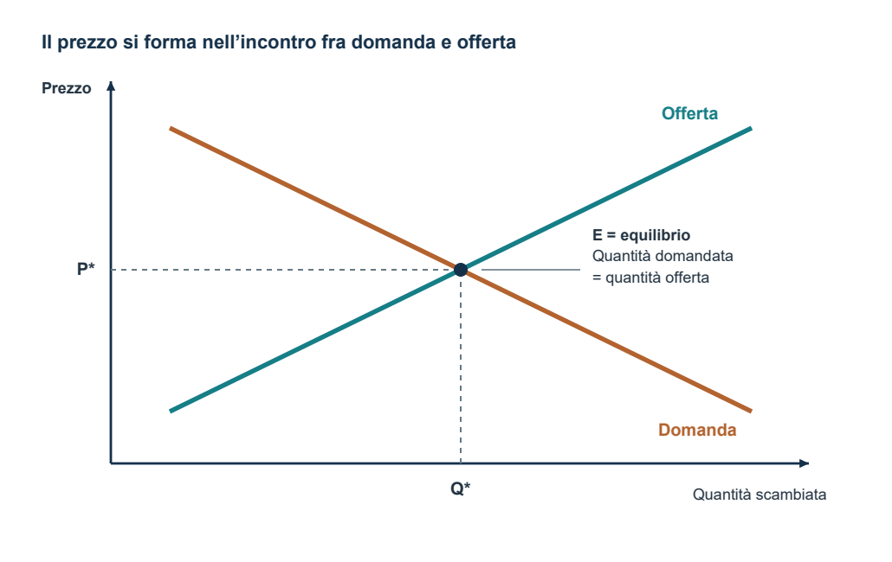
Come leggere il grafico. P* e Q* identificano prezzo e quantità di equilibrio del mercato. In concorrenza perfetta la singola impresa prende il prezzo come dato. Curve schematiche, senza dati o scala numerica.
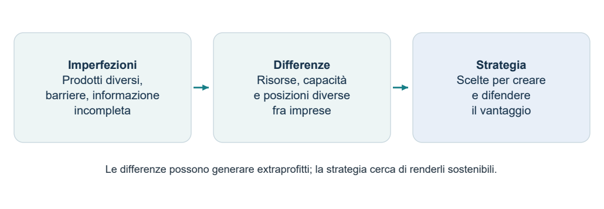
IMPRESA E DECISIONI STRATEGICHE / SEZIONE 03
Come si pianifica la strategia
Fonte: slide 10-13 e 17-20
Il processo di pianificazione strategica (PPS) comprende le attività e le decisioni che formulano la strategia e assegnano risorse e responsabilità per realizzarla. Non si esaurisce nella produzione di un piano scritto.
| Approccio formale | Approccio emergente |
|---|---|
| Porter, Lorange e HBS: strategia intenzionale e coerente. Occorrono passi, procedure, strumenti, compiti e responsabilità definiti. | Mintzberg e Quinn: strategia che emerge da esperienza e modelli cognitivi dei decisori. La pianificazione offre soprattutto linee guida, valori e visione. |
Lettura didattica: pianificare dà una direzione; apprendere dall’esperienza consente di correggerla. La strategia realizzata può quindi differire da quella inizialmente prevista.
Quattro principi di efficacia
Continuità: pianificare in modo continuo, mantenendo coerenza con passato ed evoluzione dell’ambiente.
Partecipazione: coinvolgere gli attori per verificare fattibilità, comunicare, ridurre inerzia, motivare e innovare.
Olismo: integrare le scelte fra aree aziendali e nel tempo, considerando l’impresa come sistema.
Economicità: proporzionare lo sforzo di pianificazione a tempi, costi e benefici attesi.
Tre livelli, tre domande diverse
| Livello | Decisione centrale | Responsabilità |
|---|---|---|
| Corporate | In quali campi operare? Come distribuire le risorse tra business? | Vertice strategico. |
| Business | Come competere in una specifica area prodotto/mercato? | Responsabili delle business unit. |
| Funzionale | Come tradurre la strategia in scelte di funzione e sviluppare competenze? | Responsabili di produzione, marketing, personale, ecc. |
Vision e mission: usare le definizioni del corso
La vision è la migliore ipotesi sul futuro: bisogni dei clienti, tecnologie e trasformazioni del settore. La mission è l’ambiziosa “via al futuro”, cioè l’intento che orienta l’impresa. Danno direzione, senso di scoperta e sfida, motivazione e orientamento alla cultura aziendale.
IMPRESA E DECISIONI STRATEGICHE / APPROFONDIMENTO 03
Dare concretezza alla pianificazione
Slide 12-20 | Applicazione didattica del processo
Dalla vision agli obiettivi verificabili
Nel linguaggio delle slide, la vision ipotizza come evolverà il futuro e la mission indica la via che l’impresa vuole percorrere. Non sono ancora un piano operativo. Per passare all’azione occorre specificare quali risultati si cercano, entro quando e con quali limiti. Un vincolo restringe le opzioni possibili: disponibilità di capitale, capacità produttiva, competenze o tempi.
Esempio inventato: la vision di TermoBox immagina più pasti consumati fuori casa con contenitori riutilizzabili. La mission è facilitarne trasporto e conservazione. Un obiettivo può essere ampliare la presenza commerciale entro dodici mesi; il vincolo può essere un budget limitato e l’obbligo di mantenere le prestazioni del prodotto.
Scostamento, alternativa e scelta
Uno scostamento è la distanza fra il risultato desiderato e quello attuale o atteso continuando senza cambiamenti. Se le vendite sono insufficienti, non bisogna assumere subito che serva più pubblicità: il problema può riguardare distribuzione, prestazioni, prezzo o capacità. Le alternative devono agire sulla causa individuata.
| Passaggio | Domanda operativa |
|---|---|
| Generare alternative | Possiamo migliorare il prodotto, cambiare canale o collaborare con un partner? |
| Valutarle | Quali risultati, risorse, tempi, rischi e competenze richiede ciascuna? |
| Realizzare | Chi decide? Chi esegue? Quali risorse e responsabilità riceve? |
| Misurare e apprendere | Lo scostamento dipende dall’esecuzione o da ipotesi iniziali sbagliate? |
Il feedback operativo corregge l’esecuzione: per esempio un ritardo nelle consegne. Il riesame strategico mette in discussione le premesse: per esempio i clienti non riconoscono il valore del servizio. È una distinzione didattica utile per capire perché il processo deve essere continuo.
IMPRESA E DECISIONI STRATEGICHE / SEZIONE 04
Definire il business: Abell e SBU
Fonte: slide 15-16 e 21-26
Business e SBU non sono sinonimi
Un business è un insieme di prodotti o servizi venduti a clienti omogenei, in competizione con concorrenti omogenei, per cui si possono definire obiettivi e politiche relativamente autonomi. L’omogeneità riguarda la sostituibilità dei prodotti e il comportamento dei clienti rispetto a prezzo, qualità e servizio.
La Strategic Business Unit (SBU) è l’unità operativa o il centro di pianificazione che gestisce quel business con sufficiente autonomia. Può coincidere con una divisione dotata di un responsabile oppure integrare risorse di più funzioni. Perciò una SBU non deve necessariamente coincidere con una singola unità dell’organigramma.
Business scope: quali confini stiamo considerando?
L’analisi dell’ampiezza del business chiarisce clienti e bisogni attuali e possibili espansioni: stessi clienti con nuovi bisogni, nuovi clienti con bisogni già serviti oppure entrambi nuovi. Definire bene il perimetro è indispensabile prima di elencare concorrenti e sostituti.
Le tre dimensioni del modello di Abell
| Dimensione | Domanda | Contenitori per alimenti |
|---|---|---|
| Gruppi di clienti | Chi serviamo? | Famiglie oppure industria. |
| Funzioni svolte | Quali bisogni soddisfiamo? | Imballaggio e conservazione. |
| Tecnologie | Come soddisfiamo quei bisogni? | Vetro oppure plastica. |
Il business è una combinazione delle tre dimensioni. L’impresa sceglie l’ampiezza, cioè quanti segmenti coprire, la differenziazione fra segmenti, cioè quanto adattare l’offerta ai diversi destinatari, e la differenziazione dai concorrenti, cioè come rendersi distinta.
Come leggere gli esempi delle slide
Un’impresa può coprire più funzioni, come rivetti e attrezzi per il rivettamento destinati all’aerospazio; più clienti, come rivetti per usi diversi; oppure più tecnologie, come isolanti in fibra di vetro e polistirolo. Gli esempi della musica e della pasta mostrano che uno stesso nome di prodotto può nascondere bisogni e gruppi di clienti differenti.
Errore da evitare: partire dalla tecnologia e trattarla come se fosse il bisogno. Il cliente cerca una funzione o un beneficio; la tecnologia è uno dei modi per fornirlo.
IMPRESA E DECISIONI STRATEGICHE / APPROFONDIMENTO 04
Confini e segmenti: ragionare con Abell
Slide 15-26 | Chiarimenti e applicazione didattica
Separare bisogno, soluzione e organizzazione
“Bottiglie in vetro” identifica soprattutto una soluzione. “Conservare bevande per famiglie” identifica funzione e clienti. Sono prospettive diverse: se si guarda solo al prodotto si rischia di non vedere un’alternativa tecnologica; se si definisce un bisogno troppo generico, si includono attività con dinamiche competitive poco confrontabili.
| Concetto | Che cosa identifica |
|---|---|
| Settore | Il contesto di offerta e concorrenza delimitato per l’analisi. I confini vanno dichiarati. |
| Segmento | Un gruppo relativamente omogeneo di clienti o esigenze all’interno del campo considerato. |
| Business | Una combinazione sufficientemente coerente di offerta, clienti e concorrenti per definire una strategia. |
| SBU | L’unità operativa o il centro di pianificazione a cui affidare la gestione strategica del business. |
Applicare le tre dimensioni senza confonderle
Clienti: famiglie, ristorazione, produttori industriali. Funzioni: conservare, trasportare, dosare. Tecnologie: vetro, plastica, metallo. Un nuovo cliente modifica l’asse dei gruppi serviti; un nuovo materiale quello delle tecnologie; una nuova utilità quello delle funzioni. Le tre dimensioni possono cambiare anche insieme.
L’ampiezza indica quante combinazioni si coprono. La differenziazione tra segmenti riguarda l’adattamento dell’offerta: una famiglia e un’industria possono richiedere formati e servizi diversi. La differenziazione rispetto ai concorrenti riguarda invece ciò che rende preferibile la propria proposta nello stesso campo competitivo.
Il confine modifica la classificazione dei concorrenti
Se il settore è definito come contenitori in vetro, una soluzione in plastica può essere un sostituto esterno. Se l’analisi comprende tutti i contenitori alimentari, le imprese della plastica possono rientrare fra i rivali diretti. Non cambia il bisogno: cambia il perimetro dichiarato. La classificazione deve restare coerente lungo tutta l’analisi.
IMPRESA E DECISIONI STRATEGICHE / TAVOLA B
Dal processo ai confini del business
Rielaborazione grafica delle slide 17 e 22-24
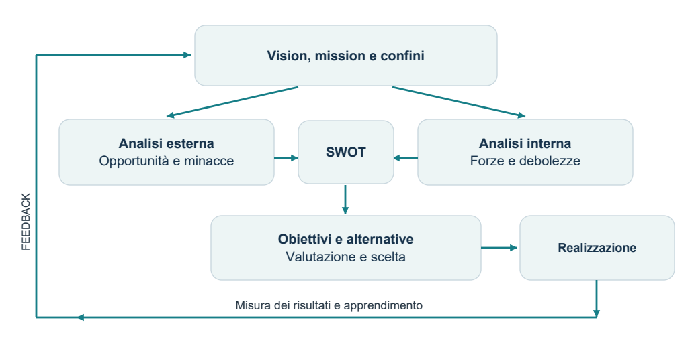
Il processo è circolare: i risultati e l’esperienza possono portare a rivedere analisi, obiettivi e decisioni. La SWOT sintetizza il confronto fra esterno e interno.
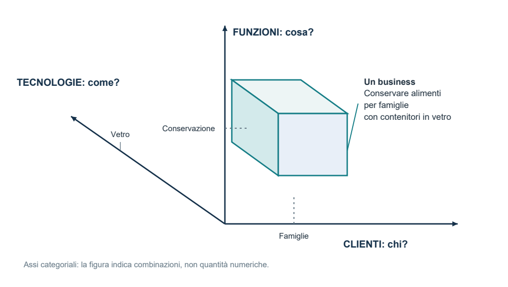
Abell: chiedi sempre chi servi, quale funzione soddisfi e con quale tecnologia. Il volume colorato evidenzia una combinazione esemplificativa, non la dimensione economica del business.
IMPRESA E DECISIONI STRATEGICHE / SEZIONE 05
Redditività e cinque forze
Fonte: slide 27-31
L’analisi esterna studia opportunità e minacce e aiuta a capire la redditività media del settore. L’analisi interna studia punti di forza e debolezza e aiuta a spiegare il differenziale dell’impresa. Un’impresa forte può operare in un settore poco attrattivo; un settore attrattivo non garantisce buoni risultati a tutte le imprese.
La concorrenza è più ampia dei rivali diretti
| Forza competitiva | Come può ridurre la redditività |
|---|---|
| 1. Rivalità tra concorrenti | Pressione sui prezzi e maggiori spese per competere. |
| 2. Minaccia di nuovi entranti | Limite ai prezzi e investimenti per difendere la posizione. |
| 3. Minaccia di sostituti | Offerte alternative che limitano il prezzo accettabile. |
| 4. Potere dei fornitori | Aumento dei costi degli input e degli investimenti richiesti. |
| 5. Potere dei clienti | Prezzi più bassi o richieste di maggiori servizi e investimenti. |
Quanto più queste pressioni sono intense, tanto minore tende a essere l’attrattività. Le condizioni strutturali influiscono su prezzi praticabili, costi da sostenere e capitale necessario. Le slide ricordano che la concorrenza tende a ricondurre i rendimenti verso una remunerazione minima corretta per il rischio.
1. Quando aumenta la rivalità interna?
Con prodotti poco differenziati, scarsa identità di marca, bassa concentrazione, crescita lenta, elevati costi fissi e di magazzino, recenti ristrutturazioni tecnologiche e alte barriere all’uscita. Per esempio, se il mercato non cresce, aumentare le vendite richiede spesso sottrarre clienti ai rivali; se i costi fissi sono elevati, ogni impresa è spinta a utilizzare gli impianti.
Le barriere all’uscita includono impianti difficili da riutilizzare, obblighi e costi di uscita, interdipendenze strategiche, vincoli sociali e politici e motivi emotivi. Possono trattenere imprese nel settore anche con risultati insoddisfacenti, prolungando la pressione competitiva.
IMPRESA E DECISIONI STRATEGICHE / APPROFONDIMENTO 05
Dalle forze agli effetti economici
Slide 27-31 | Catene causali ed esempio numerico didattico
Il collegamento fra concorrenza e redditività
Una pressione competitiva conta perché cambia la possibilità di trattenere valore economico. I clienti possono richiedere sconti o servizi; i fornitori possono aumentare il prezzo degli input; rivali e sostituti possono impedire di aumentare il prezzo finale. La stessa vendita può quindi produrre un risultato inferiore anche senza una riduzione dei volumi.
| Condizione | Meccanismo | Possibile effetto |
|---|---|---|
| Prodotti omogenei | Il cliente cambia facilmente venditore. | Maggiore pressione sul prezzo. |
| Crescita lenta | Per crescere occorre spesso sottrarre clienti ai rivali. | Concorrenza più aggressiva. |
| Costi fissi elevati | Lasciare capacità inutilizzata pesa sui risultati. | Incentivo a riempire gli impianti, anche riducendo i prezzi. |
| Alte barriere all’uscita | Imprese deboli restano nel settore. | La pressione competitiva può durare più a lungo. |
Settore e impresa: separare i due contributi
Esempio numerico: se la redditività media di un settore è 8% e quella dell’impresa è 11%, il differenziale è +3 punti percentuali. Se la media scende al 5% e il differenziale resta invariato, la redditività dell’impresa diventa 8%. È un’illustrazione della scomposizione delle slide: i due termini possono cambiare contemporaneamente e non sono previsioni indipendenti.
Un investimento richiesto dal mercato può inoltre aumentare il capitale necessario senza migliorare proporzionalmente il risultato. Per questo, nelle cinque forze, non basta discutere prezzi e costi: bisogna considerare anche gli investimenti. A parità di risultato economico, più capitale impegnato può significare un rendimento inferiore.
Come formulare il giudizio conclusivo
Definisci il settore, individua le condizioni strutturali, spiega l’effetto di ciascuna forza e seleziona quelle più rilevanti. Non fare una media meccanica di cinque etichette: una dipendenza critica da un input esclusivo può pesare più di varie pressioni moderate. Un settore poco attrattivo può comunque contenere imprese con un forte vantaggio relativo.
IMPRESA E DECISIONI STRATEGICHE / SEZIONE 06
Entranti, scala e apprendimento
Fonte: slide 32-36
2. Perché conta anche solo la minaccia di entrata?
I potenziali entranti sono imprese, anche non ancora esistenti, che potrebbero entrare nel settore. Una minaccia credibile può costringere le imprese presenti a tenere prezzi più bassi e a sostenere costi o investimenti difensivi prima che l’ingresso si verifichi.
Il prezzo di dissuasione è il livello al quale gli extraprofitti attesi dall’entrante compensano i costi di ingresso. Nello schema delle slide, sopra tale livello l’ingresso è conveniente; sotto non lo è. Più costoso o rischioso è entrare, più debole tende a essere la minaccia, a parità delle altre condizioni.
Da cosa dipende la minaccia?
| Barriere all’entrata | Reazione attesa degli operatori presenti |
|---|---|
| Economie di scala e apprendimento; differenziazione e marca; fabbisogno di capitale; costi di conversione; accesso privilegiato a input e distribuzione; tecnologie esclusive; politiche governative. | Precedenti reazioni forti; disponibilità di liquidità o capacità produttiva libera; recenti investimenti rilevanti e dedicati che incentivano la difesa della posizione. |
Gli switching costs, o costi di conversione, sono i costi del passaggio a un’altra soluzione o controparte: adattamento tecnico, formazione, nuove procedure e altre difficoltà di cambiamento. Se i clienti devono sostenerli per scegliere un nuovo operatore, l’entrante deve compensarli con un’offerta più conveniente.
Scala e apprendimento: effetti simili, cause diverse
| Economie di scala | Economie di apprendimento |
|---|---|
| Il costo unitario minimo diminuisce aumentando il volume produttivo per una data unità di tempo e scegliendo l’assetto produttivo più efficiente. Conta la dimensione produttiva. | Il costo unitario diminuisce al crescere della produzione cumulata dall’inizio dell’attività. Conta l’esperienza accumulata in conoscenze e competenze. |
| La DOM, Dimensione Ottima Minima, è il livello oltre il quale la curva dei costi minimi tende a stabilizzarsi. | La learning curve descrive i benefici dell’esperienza: meno errori, metodi migliori e maggiore efficienza. |
Collegamento all’esame: la scala rende difficile entrare a piccola dimensione; l’apprendimento rende difficile recuperare subito l’esperienza degli operatori già presenti.
IMPRESA E DECISIONI STRATEGICHE / APPROFONDIMENTO 06
Quattro fonti di costo da distinguere
Slide 34-36, 46 e 49 | Esempi numerici didattici
1. Scala: cambiare dimensione produttiva efficiente
La curva di scala delle slide confronta, per ogni volume produttivo, il costo unitario minimo ottenibile scegliendo la soluzione produttiva più efficiente. Le indivisibilità degli impianti o la specializzazione possono favorire sistemi più grandi. La DOM indica il livello oltre il quale il costo minimo tende a stabilizzarsi: non è la quantità che massimizza automaticamente il profitto.
2. Utilizzo della capacità: sfruttare meglio lo stesso impianto
È diverso dal costruire un sistema più efficiente a maggiore scala. Esempio: un impianto ha costi fissi annui di 100.000 euro e costo variabile di 5 euro per pezzo. Entro la capacità disponibile, il costo medio è 100.000 / Q + 5: con 10.000 pezzi è 15 euro; con 20.000 è 10 euro. Si ripartiscono i costi fissi su più unità, a impianto invariato. L’esempio isola l’utilizzo della capacità e non descrive da solo tutta la curva di scala di lungo periodo.
3. Apprendimento: accumulare esperienza
Conta la quantità prodotta dall’inizio dell’attività, non solo quella dell’anno. Un’impresa può imparare a ridurre tempi, scarti e rilavorazioni senza cambiare dimensione. L’effetto non è automatico: l’esperienza deve diventare conoscenza utilizzabile, procedure migliori e capacità condivise. Un cambiamento tecnologico può ridurre il valore dell’esperienza precedente.
4. Scopo: condividere risorse fra attività diverse
Si hanno economie di scopo quando produrre o gestire congiuntamente offerte diverse costa meno che farlo separatamente. Esempio: due linee usano la stessa rete commerciale. Non aumenta necessariamente la scala di un singolo prodotto: si condivide una risorsa fra prodotti o business. È una possibile base delle sinergie corporate.
Prezzo di dissuasione: non coincide necessariamente con il costo minimo dell’impresa già presente. Dipende dalla convenienza attesa dell’entrante, inclusi i costi di ingresso e la risposta competitiva che prevede di incontrare.
IMPRESA E DECISIONI STRATEGICHE / TAVOLA C
Pressioni competitive e costi
Rielaborazione grafica delle slide 29 e 35-36
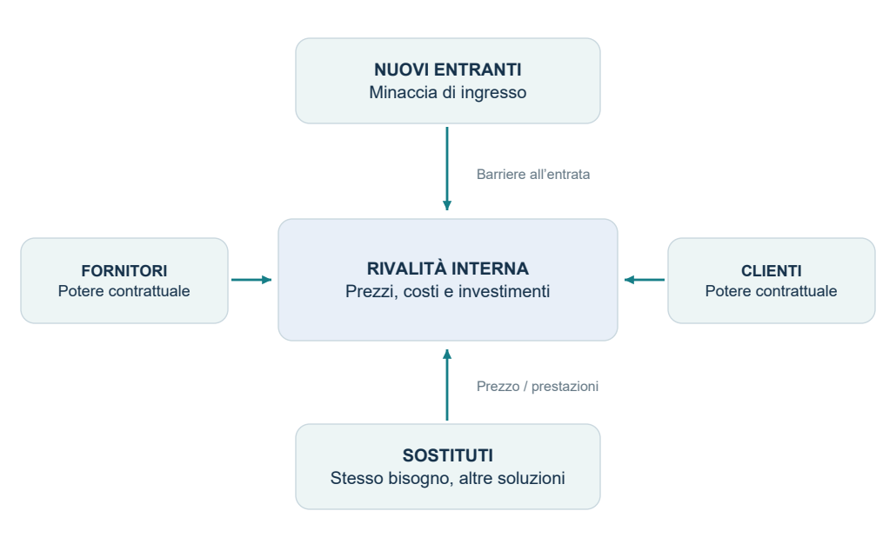
Cinque forze: le pressioni possono comprimere i prezzi, aumentare costi e investimenti e ridurre la redditività del settore. L’intensità dipende dal caso analizzato.
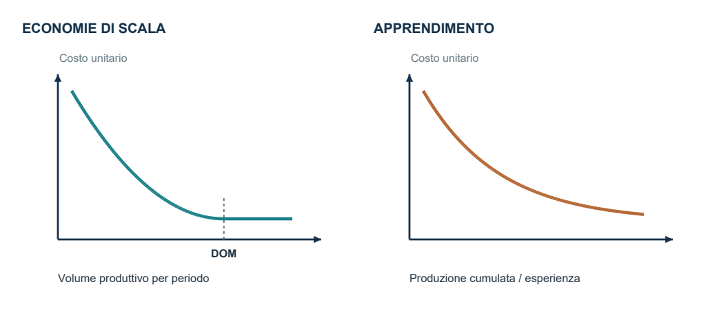
IMPRESA E DECISIONI STRATEGICHE / SEZIONE 07
Sostituti e potere contrattuale
Fonte: slide 37-41
3. Minaccia dei prodotti sostitutivi
I sostituti provengono da altri settori o tecnologie, ma soddisfano lo stesso bisogno. Esempi delle slide: guardiania e antifurti elettronici, vino e birra, bottiglie in vetro e in PVC. La distinzione dipende dai confini del business scelti: prima si definisce il perimetro, poi si classificano i concorrenti.
La minaccia aumenta quando il rapporto prezzo/prestazioni del sostituto è migliore o sta migliorando, i costi tecnici di passaggio sono bassi e le barriere psicologiche o di immagine sono deboli. Un sostituto può limitare i prezzi anche senza eliminare completamente il prodotto esistente.
4 e 5. Fornitori e clienti
| Fornitori forti quando... | Clienti forti quando... |
|---|---|
| Gli input sono differenziati e importanti per costo o unicità dell’offerta. | Il prodotto acquistato è poco differenziato. |
| Cambiare fornitore è costoso e mancano sostituti. | Cambiare fornitore è facile ed esistono alternative. |
| Il settore dei fornitori è concentrato. | I clienti sono concentrati e gli acquisti pesano molto sul fatturato del venditore. |
| È credibile l’integrazione a valle: il fornitore può entrare nell’attività dell’impresa cliente. | È credibile l’integrazione a monte: il cliente può produrre internamente ciò che acquista. |
| Effetto: prezzi degli input, costi o investimenti più elevati. | Effetto: prezzi di vendita inferiori, maggiori servizi, costi o investimenti. |
Esempio didattico: se un produttore dipende da un componente esclusivo, sostituirne il fornitore può richiedere riprogettazione e collaudi: il fornitore ha potere. Se una catena distributiva compra una parte rilevante della produzione e può scegliere prodotti equivalenti, il potere passa al cliente.
La critica: le relazioni possono anche creare valore
Le slide contrappongono alla lettura prevalentemente conflittuale di Porter una prospettiva di partnership: attenzione al cliente, impresa estesa con i fornitori e cooperazione con concorrenti attraverso joint venture, licenze e accordi tecnologici o di fornitura. Questi rapporti possono generare vantaggi condivisi.
IMPRESA E DECISIONI STRATEGICHE / APPROFONDIMENTO 07
Valutare le pressioni nel caso concreto
Slide 37-41 | Metodo di lettura e casi didattici
Fornitori e clienti: conta la possibilità di cambiare
Il potere contrattuale nasce anche dall’asimmetria delle alternative. Se il produttore può acquistare un input equivalente da molti fornitori, dipende meno da ciascuno. Se solo un fornitore garantisce una prestazione essenziale e cambiare richiede riprogettazione, la dipendenza cresce. Analogamente, un cliente importante con molti venditori alternativi può imporre condizioni più favorevoli.
La concentrazione va letta relativamente alle controparti. Pochi fornitori possono avere forza verso molti acquirenti frammentati; pochi grandi compratori possono averla verso numerosi produttori. Non basta contare le imprese: importano differenziazione, peso economico degli acquisti e costi di cambiamento.
Integrazione a monte e a valle: fissare il punto di vista
| Situazione | Direzione | Perché conta |
|---|---|---|
| Il fornitore di componenti entra nella produzione del bene finale. | A valle: verso il cliente. | Può diventare concorrente dell’impresa che rifornisce. |
| Il produttore del bene finale decide di fabbricare il componente. | A monte: verso gli input. | Può ridurre la propria dipendenza dal fornitore. |
La minaccia è credibile se chi la formula possiede o può ottenere risorse e competenze necessarie. Un annuncio privo di fattibilità non ha lo stesso effetto negoziale di una possibilità concreta.
Sostituzione: guardare la convenienza complessiva
Un sostituto può essere meno costoso ma offrire prestazioni peggiori, oppure costare di più e risolvere meglio il bisogno. La valutazione riguarda il rapporto prezzo/prestazioni e la sua evoluzione. Vanno aggiunti i costi tecnici, organizzativi, psicologici e di immagine del passaggio. La minaccia cresce se il cliente può cambiare facilmente e trova un’alternativa più conveniente nel complesso.
Perché collaborare può cambiare il risultato
Un rapporto continuativo può ridurre errori, scorte e tempi di sviluppo e creare valore per entrambe le parti. Questo spiega la prospettiva dell’impresa estesa. La collaborazione non cancella però la questione distributiva: resta da capire come vengono ripartiti i benefici e se una parte diventa eccessivamente dipendente.
IMPRESA E DECISIONI STRATEGICHE / SEZIONE 08
Scegliere come competere
Fonte: slide 42-50
L’analisi interna cerca le ragioni per cui, nello stesso settore, alcune imprese ottengono risultati migliori. Porter propone di chiarire prima la strategia competitiva di base, poi di cercare nelle attività e nei loro legami le fonti del vantaggio.
| Ambito competitivo | Vantaggio di costo | Vantaggio di unicità |
|---|---|---|
| Mercato complessivo | Leadership di costo | Differenziazione |
| Segmento specifico | Focalizzazione sui costi | Focalizzazione sulla differenziazione |
Leadership di costo
Significa essere il produttore con i costi più bassi e un ampio raggio d’azione. Il vantaggio può permettere margini maggiori a prezzi simili ai concorrenti oppure maggiore capacità di sostenere prezzi bassi. Non coincide automaticamente con il prezzo di vendita minimo.
Le fonti indicate nelle slide sono: scala, apprendimento, utilizzo della capacità produttiva, legami interni e verticali, grado di integrazione verticale, sinergie, tempismo, localizzazione, politiche discrezionali su prodotto e servizio e fattori istituzionali. Conta la coerenza dell’intero sistema di attività.
Un costo inferiore offre un cuscinetto rispetto alla rivalità, alla pressione dei clienti e all’aumento dei costi degli input; migliora inoltre la posizione rispetto a entranti e sostituti. Questo non elimina le cinque forze, ma riduce la vulnerabilità dell’impresa.
Differenziazione
Il cliente deve percepire l’offerta come unica su caratteristiche rilevanti: qualità, design, tecnologia, marca, assistenza, servizio o rete di vendita. L’unicità ha valore economico quando favorisce preferenza e disponibilità a pagare sufficienti a compensare i costi necessari per ottenerla.
Le determinanti comprendono scelte su prestazioni e servizi, qualità degli input, competenze e formazione; collegamenti interni e con clienti e fornitori; tempismo, localizzazione, interrelazioni ed economie di scopo, apprendimento.
La differenziazione può attenuare la rivalità, fidelizzare i clienti, creare barriere e aumentare la resistenza ai sostituti. La protezione dalle pressioni dei fornitori passa anche attraverso margini e capacità di sostenere aumenti dei costi: non implica necessariamente che il fornitore perda ogni potere.
IMPRESA E DECISIONI STRATEGICHE / SEZIONE 09
Focalizzazione, rischi e coerenza
Fonte: slide 50-52
Focalizzazione: un ambito ristretto
Il presupposto è che esistano segmenti con esigenze o strutture di costo diverse dal resto del mercato. L’impresa sceglie un segmento e lo serve meglio dei concorrenti che operano su un mercato più ampio.
Focalizzazione sui costi: nel segmento prescelto l’impresa riesce a sostenere costi più bassi dei concorrenti generalisti, per esempio grazie a una distribuzione specifica.
Focalizzazione sulla differenziazione: soddisfa esigenze particolari che l’offerta generalista non copre adeguatamente.
Esempio didattico: un produttore dedicato a un’esigenza alimentare molto specifica può adattare ricette e servizio a quel gruppo di clienti. Il vantaggio nasce dalla capacità di servire il segmento, non dal semplice fatto di essere una piccola impresa.
Ogni strategia ha rischi caratteristici
| Strategia | Rischi principali |
|---|---|
| Leadership di costo | Imitazione; cambiamenti tecnologici; perdita delle fonti di costo; qualità o caratteristiche troppo lontane dalle attese; focalizzatori con costi ancora migliori nel loro segmento. |
| Differenziazione | Imitazione; caratteristiche distintive che perdono importanza; costi troppo elevati; focalizzatori più capaci di soddisfare bisogni specifici. |
| Focalizzazione | Imitazione; segmento che perde rilevanza; maggiore convenienza di offerte ampie; concorrenti che si focalizzano su sottosegmenti ancora più precisi. |
“Bloccati a metà del guado”
Nella formulazione di Porter riportata nelle slide, perseguire contemporaneamente strategie incompatibili può impedire di ottenere un vantaggio chiaro: l’impresa non è abbastanza efficiente per vincere sui costi né abbastanza unica per giustificare un prezzo maggiore.
Le slide ammettono eccezioni: vantaggi di costo molto forti che consentono anche di differenziare oppure innovazioni tecnologiche o organizzative rilevanti. Non va quindi trasformata la coerenza strategica nell’affermazione assoluta che costo e qualità non possano mai migliorare insieme.
Risposta efficace all’esame: individua vantaggio cercato e ampiezza del mercato, poi collega attività necessarie, rischi e condizioni di sostenibilità. La focalizzazione modifica l’ambito; può perseguire sia costo sia unicità.
IMPRESA E DECISIONI STRATEGICHE / APPROFONDIMENTO 09
Quando il vantaggio produce margine
Slide 43-52 | Esercizio numerico e interpretazione
Per capire le strategie di base conviene distinguere prezzo, costo e margine. L’esempio usa un costo unitario medio comprensivo dei costi considerati e suppone volumi confrontabili. I valori illustrano il meccanismo; non costituiscono dati su imprese reali.
| Situazione | Prezzo | Costo | Margine/unità |
|---|---|---|---|
| Concorrente di riferimento | 100 | 80 | 20 |
| Leader di costo, prezzo uguale | 100 | 65 | 35 |
| Leader di costo, prezzo inferiore | 90 | 65 | 25 |
| Differenziazione apprezzata | 125 | 95 | 30 |
| Differenziazione troppo costosa | 110 | 105 | 5 |
Interpretare i risultati
Il leader di costo può trattenere il risparmio come maggiore margine o trasferirne una parte ai clienti. Anche vendendo a 90 ottiene nell’esempio 25, più dei 20 del concorrente. La differenziazione apprezzata genera un premio di prezzo di 25 rispetto al riferimento e un extra costo di 15: il margine migliora di 10. Se l’extra costo è 25 e il premio solo 10, il margine scende a 5.
Il margine unitario non è il risultato totale. Per valutare una scelta servono anche quantità vendute, eventuali costi aggiuntivi non inclusi e capitale impiegato. Un prezzo più basso può modificare la domanda e le reazioni dei concorrenti; non si può assumerne il successo dal solo margine per pezzo.
Il ruolo delle scelte coerenti
Un’offerta standardizzata può favorire volumi e semplicità dei processi, ma limitare la personalizzazione. Un servizio su misura può aumentare il valore per un segmento e richiedere più competenze e coordinamento. Questi trade-off, cioè scambi fra vantaggi e rinunce, spiegano il rischio di non eccellere né nei costi né nell’unicità quando le attività sono incoerenti.
Sostenibile non significa permanente
Il vantaggio è sostenibile se resiste nel tempo a imitazione e cambiamenti rilevanti. La marca può perdere valore, un’innovazione rendere obsolete le tecnologie e un segmento ridursi. Occorre riconoscere quali risorse e legami rendono difficile copiare l’offerta, continuando a rinnovarli.
IMPRESA E DECISIONI STRATEGICHE / TAVOLA D
La mappa delle strategie competitive
Rielaborazione grafica delle slide 43-52
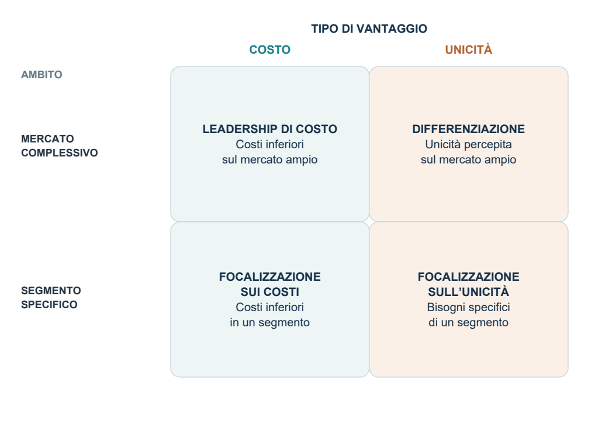
Leggi prima gli assi: il vantaggio può derivare da costi inferiori o unicità percepita; l’ambito può essere ampio o limitato a un segmento. La focalizzazione non coincide con la sola differenziazione.
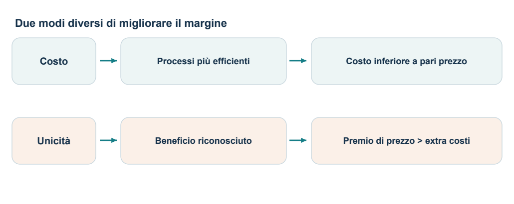
Condizione economica: controllare sempre i costi aggiuntivi e il valore riconosciuto dal cliente. La combinazione di strategie richiede coerenza e condizioni favorevoli.
IMPRESA E DECISIONI STRATEGICHE / SEZIONE 10
Da dove nasce il vantaggio: le attività
Fonte: slide 53-58
La catena del valore scompone l’impresa in attività tecnologicamente ed economicamente distinte e ne analizza le interrelazioni. Serve a localizzare le fonti di costo o differenziazione: dire soltanto “l’impresa è efficiente” non spiega quale attività produca il vantaggio.
| Attività primarie | Attività di supporto |
|---|---|
| Logistica in entrata; attività operative; logistica in uscita; marketing e vendite; servizi. Rendono disponibile l’output sul mercato. | Infrastruttura aziendale; gestione delle risorse umane; sviluppo della tecnologia; approvvigionamenti. Consentono lo svolgimento continuativo delle attività primarie. |
Tre livelli di analisi
1. Singole attività. Come sono gestite? Quali risorse consumano? In cosa sono migliori o peggiori dei concorrenti? L’esempio automobilistico delle slide mostra che il costo dipende da scelte distribuite lungo progettazione, acquisti, produzione, distribuzione e assistenza.
2. Legami tra attività. L’efficienza complessiva dipende dal coordinamento, non solo dall’ottimizzazione di ogni parte. Integrare marketing, progettazione, produzione e HR consente di sviluppare soluzioni desiderate, realizzabili e coerenti con le competenze disponibili. Integrare ordini tra impresa e fornitore può ridurre le scorte di entrambi. Le slide richiamano just in time, Value Stream Management e concurrent engineering.
3. Perimetro d’impresa. Quali attività svolgere internamente e quali affidare all’esterno? L’integrazione verticale amplia le attività controllate; l’outsourcing affida attività a soggetti esterni. Il confronto va fatto sugli effetti complessivi, non solo sul prezzo di acquisto.
| Possibili vantaggi dell’integrazione | Possibili svantaggi |
|---|---|
| Minori costi di approvvigionamento e trasporto; fornitura dedicata per tempi e qualità; minore pressione di fornitori o clienti; economie da processi congiunti; internalizzazione dei margini delle fasi integrate. | Minore efficienza rispetto a fornitori specializzati; minori stimoli a innovare; ridotta flessibilità; maggiore capitale investito. |
Attenzione: “di supporto” non significa secondaria per il vantaggio competitivo. Una tecnologia proprietaria o la formazione del personale possono essere la principale fonte di unicità.
IMPRESA E DECISIONI STRATEGICHE / APPROFONDIMENTO 10
Legami, attività e scelte di confine
Slide 53-58 | Approfondimento ed esempio didattico
La catena del valore non coincide con l’organigramma
L’organigramma assegna responsabilità; la catena del valore scompone attività che contribuiscono al risultato. Una singola funzione può partecipare a più attività e un processo può attraversare più funzioni. Analizzare i collegamenti permette di evitare che ciascun responsabile migliori un indicatore locale a scapito dell’impresa.
| Attività | Che cosa osservare: esempi |
|---|---|
| Logistica in entrata | Ricevimento, movimentazione e scorte degli input; errori e tempi. |
| Attività operative | Trasformazione, assemblaggio, qualità, scarti e produttività. |
| Logistica in uscita | Disponibilità del prodotto, magazzino finito e consegne. |
| Marketing e vendite | Comprensione dei bisogni, canali, comunicazione e acquisizione dei clienti. |
| Servizi | Installazione, assistenza, riparazione e mantenimento del valore d’uso. |
Gli approvvigionamenti di supporto riguardano l’acquisizione degli input; la logistica in entrata riguarda la loro gestione fisica. La tecnologia sostiene anche i processi, non solo il prodotto. Infrastruttura e risorse umane comprendono attività organizzative che rendono possibile il lavoro delle altre aree.
Un miglioramento locale può peggiorare il totale
Esempio: un componente meno costoso fa risparmiare 2 euro per prodotto ma genera in media 3 euro in più di rilavorazioni e assistenza. Il costo complessivo aumenta di 1 euro. Il confronto deve includere il ciclo rilevante del prodotto e le conseguenze sulle altre attività, oltre agli eventuali danni alla reputazione.
Integrare o acquistare all’esterno?
Per confrontare produzione interna e acquisto esterno vanno considerate capacità del fornitore, qualità, coordinamento, affidabilità, investimenti e flessibilità. Internalizzare il margine del fornitore non equivale a ottenere un guadagno gratuito: l’impresa si assume anche attività, costi, capitale e rischi prima sostenuti da lui.
IMPRESA E DECISIONI STRATEGICHE / TAVOLA E
Attività, legami e perimetro
Rielaborazione grafica delle slide 54 e 58
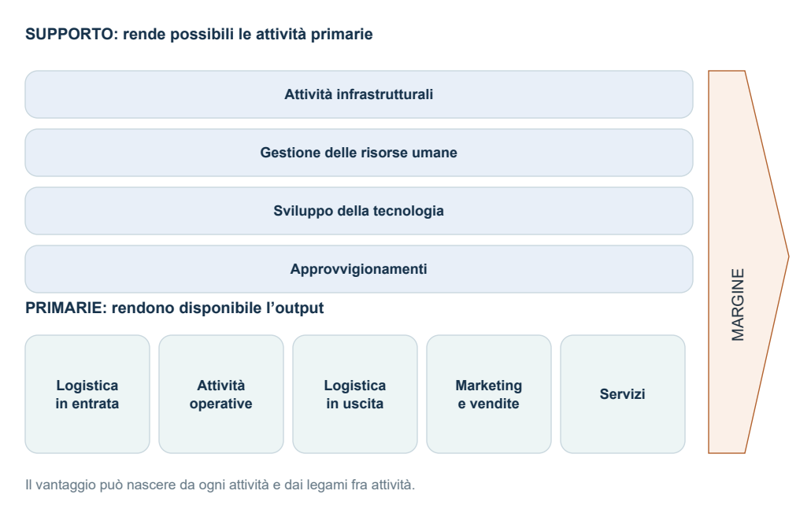
Margine: rappresenta la differenza fra il valore ottenuto e il costo delle attività. Le barre di supporto attraversano le attività primarie perché ne consentono e influenzano lo svolgimento.
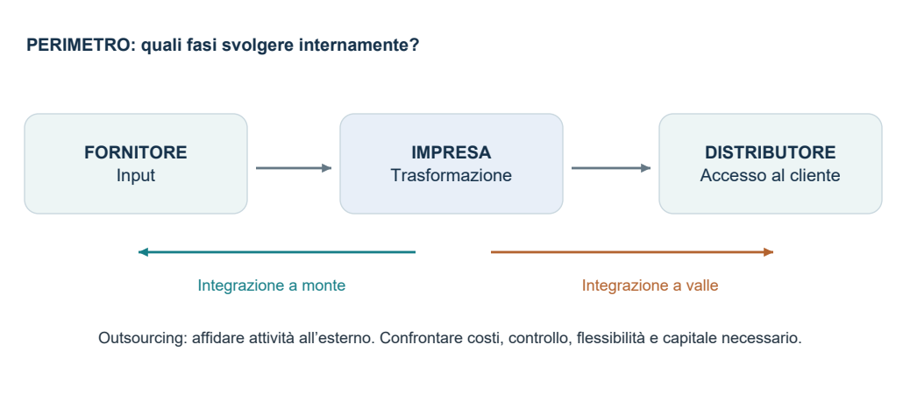
IMPRESA E DECISIONI STRATEGICHE / SEZIONE 11
SWOT: trasformare l’analisi in scelte
Fonte: slide 59-60
| Fattori favorevoli | Fattori sfavorevoli | |
|---|---|---|
| Interno | Strengths: punti di forza | Weaknesses: debolezze |
| Esterno | Opportunities: opportunità | Threats: minacce |
La SWOT collega analisi esterna e interna. Non basta compilare quattro elenchi: occorre capire come una caratteristica dell’impresa interagisce con un cambiamento dell’ambiente e quali decisioni ne derivano. Forze e debolezze vanno considerate rispetto ai concorrenti di riferimento.
Il procedimento delle slide
1. Identificare i principali trend esterni e valutarne rilevanza per il business, probabilità e prossimità temporale.
2. Identificare i principali punti di forza e debolezza interni.
3. Costruire la matrice di sinergia: fattori interni sulle righe, cambiamenti esterni sulle colonne; i segni evidenziano interazioni favorevoli o sfavorevoli.
4. Individuare gli strategic issues, cioè le questioni strategiche da affrontare, leggendo righe, colonne e gruppi di interazioni.
Come leggere la matrice
Per riga: una competenza è utile contro molti cambiamenti? Una debolezza espone l’impresa a più problemi?
Per colonna: un certo cambiamento coinvolge più capacità aziendali e richiede una risposta coordinata?
Per cluster: più incroci fanno emergere un tema comune, come innovazione, integrazione commerciale o competitività di costo?
L’esempio dell’elettronica di consumo
Le slide incrociano cambiamenti come convergenza tecnologica, diffusione di Internet, integrazione europea, standardizzazione dell’hardware e aumento dei costi delle materie prime con caratteristiche aziendali quali ricerca e innovazione, ampiezza della gamma, presenza territoriale, rapporto prezzo/qualità e integrazione delle società commerciali.
Errori frequenti: indicare “mercato in crescita” come forza interna; elencare “marca debole” come minaccia esterna; assumere che un cambiamento sia positivo per tutte le imprese. Il suo effetto dipende anche dalle capacità con cui l’impresa può affrontarlo.
IMPRESA E DECISIONI STRATEGICHE / APPROFONDIMENTO 11
Dalla SWOT a un piano di azione
Slide 59-60 | Procedura applicativa aggiuntiva
Selezionare i fattori, non accumulare elenchi
Un fattore SWOT è utile se è specifico, rilevante e collegabile a conseguenze. “Abbiamo personale” non basta: “abbiamo competenze di isolamento superiori ai concorrenti di riferimento” è una possibile forza da verificare. Anche un trend esterno deve avere un effetto plausibile sul business, non essere semplicemente una notizia generale.
Nelle slide i trend si valutano per rilevanza (quanto possono incidere), probabilità (quanto è plausibile che si manifestino) e prossimità (quando possono produrre effetti). Un cambiamento rilevante ma lontano può richiedere sviluppo di competenze; un rischio vicino può richiedere una risposta più immediata.
Dagli incroci alle priorità
Una forza può servire a cogliere un’opportunità o a resistere a una minaccia. Una debolezza può impedire di sfruttare una crescita favorevole o aggravare un rischio. Nella matrice di sinergia l’incrocio ha senso solo se il legame è spiegabile: il segno non sostituisce il ragionamento.
| Incrocio nel caso TermoBox | Decisione possibile | Verifica |
|---|---|---|
| Competenze tecniche + domanda di prestazioni migliori | Sviluppare un prodotto con benefici distintivi verificabili. | Prestazioni raggiunte e disponibilità dei clienti a pagare. |
| Distribuzione limitata + crescita del mercato | Provare un accordo con un canale adatto al segmento. | Copertura e margine ottenuto dopo i costi del canale. |
| Dipendenza da un fornitore + rischio di rincari | Qualificare un’alternativa o riprogettare il componente. | Qualità, tempi e costo totale della soluzione. |
Rendere la strategia attuabile
Per ogni priorità indica una responsabilità, le risorse necessarie, una scadenza e un risultato osservabile. Poi verifica la compatibilità fra le azioni: sviluppare molti prodotti mentre si riducono drasticamente le risorse tecniche può essere incoerente. La scelta delle priorità serve proprio ad affrontare risorse limitate e interdipendenze.
IMPRESA E DECISIONI STRATEGICHE / TAVOLA F
SWOT e matrice di sinergia
Applicazione didattica delle slide 59-60 al caso TermoBox
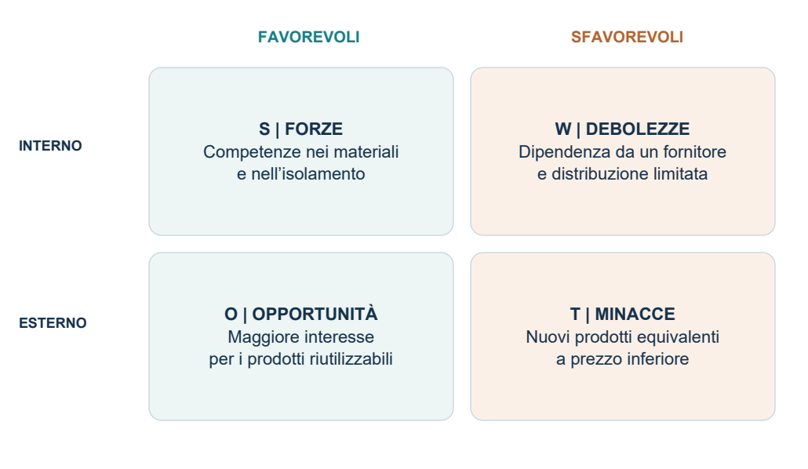
Esempio inventato: i fattori riprendono il caso TermoBox della sezione 15. Opportunità e minacce appartengono all’ambiente; forze e debolezze all’impresa.
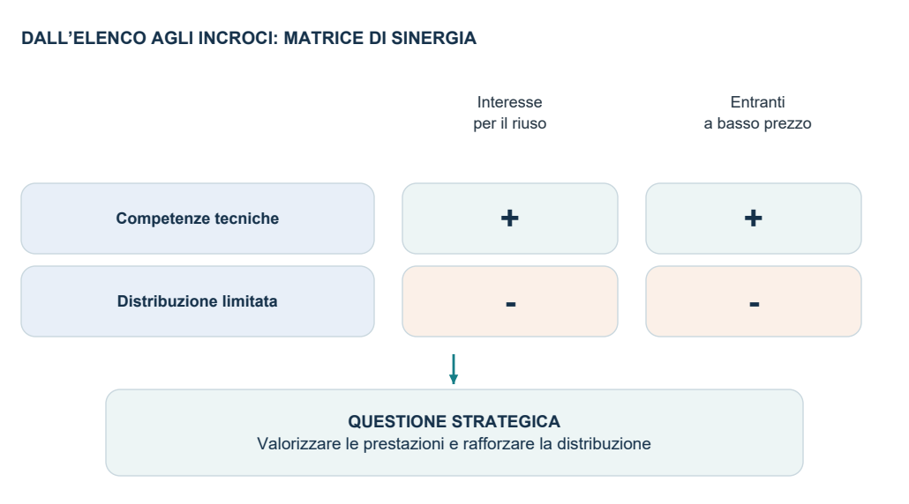
Legenda degli incroci: “+” indica una capacità che aiuta a sfruttare o affrontare il cambiamento; “-” una debolezza che ostacola la risposta. Non sono punteggi né misure di intensità.
IMPRESA E DECISIONI STRATEGICHE / SEZIONE 12
Strategia corporate e crescita
Fonte: slide 62-66
La strategia corporate considera l’impresa nel suo insieme: composizione del portafoglio di business, percorsi di crescita e allocazione delle risorse. L’obiettivo non è scegliere un’unica strategia competitiva per tutte le SBU, ma dare coerenza all’insieme.
Che cosa analizza e gestisce il vertice?
L’analisi interna riguarda mission, segmentazione per business, strategie orizzontali, integrazione verticale e filosofia aziendale. Quella esterna considera scenari economici, settoriali, tecnologici e delle risorse umane. Ne derivano orientamenti di fondo, sentieri di crescita, obiettivi e gestione di risorse fungibili, allocabili fra attività, come risorse finanziarie, personale e tecnologie chiave.
Segmentare correttamente le SBU
Occorre riconoscere gruppi di prodotti e servizi con clienti, concorrenti e obiettivi sufficientemente autonomi. Le slide richiamano concorrenti di riferimento, comportamento rispetto al prezzo, clienti, qualità e stile, sostituibilità e possibilità di separazione. L’autonomia non esclude le interdipendenze: le sinergie fra SBU giustificano il valore dell’impresa diversificata.
Le principali direzioni di crescita
| Percorso | Significato |
|---|---|
| Penetrazione | Crescere nei business esistenti con l’offerta e i mercati già serviti. |
| Ampliamento del business | Portare prodotti esistenti in nuovi mercati oppure introdurre nuovi prodotti nei mercati esistenti. |
| Integrazione verticale | Entrare nelle fasi a monte, verso gli input, o a valle, verso distribuzione e clienti finali. |
| Diversificazione correlata | Entrare in altri business collegati per mercato, prodotto o competenze. |
| Diversificazione non correlata | Entrare in business privi di legami operativi o di competenze significativi con quelli attuali. |
Perché servono le matrici di portafoglio?
Le risorse finanziarie sono limitate. Occorre confrontare la posizione dei business, individuare orientamenti generali e assegnare priorità. Le matrici citate sono BCG, McKinsey e A.D. Little: combinano, in forme diverse, attrattività del settore e posizione competitiva. Nelle slide è sviluppata in dettaglio la BCG.
IMPRESA E DECISIONI STRATEGICHE / APPROFONDIMENTO 12
Crescita e sinergie tra business
Slide 62-66 | Chiarimenti e casi didattici
La crescita non è un’unica decisione
Vendere di più ai clienti attuali, entrare in una nuova area geografica, aggiungere una funzione al prodotto e acquisire un fornitore sono percorsi differenti. Vanno descritti indicando che cosa cambia: mercato, offerta, competenze o posizione nella filiera. Etichette simili possono nascondere fabbisogni di risorse molto diversi.
| Esempio inventato | Lettura strategica |
|---|---|
| Più vendite degli stessi contenitori agli stessi gruppi di clienti. | Penetrazione del business esistente. |
| Gli stessi contenitori offerti a un nuovo gruppo di clienti o in un nuovo mercato. | Ampliamento dal lato del mercato. |
| Una nuova soluzione per il pasto destinata ai clienti già serviti. | Ampliamento dal lato del prodotto. |
| Produzione interna di un componente precedentemente acquistato. | Integrazione verticale a monte. |
| Ingresso in un business che riutilizza le competenze di isolamento. | Diversificazione correlata alle competenze. |
Che cosa rende una sinergia concreta?
La sinergia deve identificare un beneficio derivante dalla gestione congiunta: usare una rete di vendita, trasferire conoscenze, condividere sviluppo tecnologico o combinare servizi. Le strategie orizzontali collegano le SBU e coordinano tali interdipendenze. Non coincidono con l’integrazione verticale, che riguarda le fasi della filiera.
Esempio: una rete commerciale condivisa evita duplicazioni, ma può richiedere formazione e maggiore coordinamento. La sinergia esiste se i benefici superano i costi e non peggiorano il servizio dei singoli business. Scrivere “i business sono collegati” senza spiegare risorsa condivisa e vantaggio atteso non è sufficiente.
La tensione fra autonomia e integrazione
Le SBU hanno bisogno di autonomia per rispondere ai propri mercati. Il corporate deve però evitare duplicazioni e facilitare il trasferimento di capacità. Troppa centralizzazione rallenta le risposte; troppa separazione può impedire di sfruttare le sinergie. La struttura di gestione deve seguire la natura delle interdipendenze.
IMPRESA E DECISIONI STRATEGICHE / SEZIONE 13
Matrice BCG: logica e limiti
Fonte: slide 67; formule ed esempio come chiarimento applicativo
La BCG rappresenta l’attrattività con il tasso di crescita del mercato e la posizione competitiva con la quota di mercato relativa. Nella figura delle slide le soglie sono 10% e 1: sono riferimenti del modello presentato, non leggi valide in ogni settore.
| Quota relativa alta | Quota relativa bassa | |
|---|---|---|
| Crescita alta | Stars Posizione forte, ma investimenti elevati per sostenere la crescita. In genere si investe per difendere la leadership. | Question marks Mercato in crescita, posizione debole. Richiedono risorse: selezionare i business da sviluppare e quelli da ridimensionare. |
| Crescita bassa | Cash cows Posizione forte e fabbisogno di crescita minore. Tendono a generare cassa da destinare anche ad altri business. | Dogs Posizione debole in mercati poco dinamici. Valutare mantenimento selettivo, raccolta o disinvestimento. |
Perché il modello associa quota e risorse?
Una quota elevata dovrebbe favorire economie di scala e apprendimento, quindi costi competitivi. Un mercato in crescita dovrebbe essere attrattivo ma assorbire investimenti. Il modello attribuisce importanza all’autofinanziamento: le cash cows possono sostenere stars e question marks selezionati. Queste sono ipotesi, non risultati garantiti.
Esempio didattico: quota SBU 30%, principale concorrente 20%: quota relativa = 1,5. Con crescita del mercato del 4%, il business ricade fra le cash cows secondo le soglie delle slide. Ciò suggerisce una funzione di generazione di risorse, da verificare con dati economici e finanziari reali.
Limiti da citare sempre
Crescita non significa necessariamente attrattività; quota alta non garantisce vantaggio competitivo e una nicchia può essere redditizia con quota bassa; l’autofinanziamento non è sempre la scelta migliore; l’ottica finanziaria non coglie le sinergie tra business. Un dog non deve quindi essere automaticamente venduto, e una star non è necessariamente un’attività con cassa netta già positiva.
IMPRESA E DECISIONI STRATEGICHE / APPROFONDIMENTO 13
Esercizio svolto sulla matrice BCG
Slide 67 | Tutti i dati dell’esercizio sono inventati
Considera quattro SBU, con mercati definiti coerentemente. La quota del concorrente è quella del maggiore rivale esterno alla SBU. Usiamo le soglie 1 e 10% della figura delle slide; nessun dato cade esattamente sulla soglia.
| SBU | Quota propria | Quota rivale | Quota relativa | Crescita mercato | Quadrante |
|---|---|---|---|---|---|
| A | 30% | 20% | 1,50 | 4% | Cash cow |
| B | 24% | 20% | 1,20 | 15% | Star |
| C | 8% | 20% | 0,40 | 18% | Question mark |
| D | 5% | 25% | 0,20 | 2% | Dog |
1. Calcolare prima di classificare
Per A: 30 / 20 = 1,50. La quota relativa è alta e la crescita è bassa: cash cow. Per C: 8 / 20 = 0,40. La quota è bassa e la crescita è alta: question mark. Il denominatore non è la dimensione totale del mercato: quella serve a calcolare la quota assoluta, non il rapporto relativo.
2. Distinguere la crescita del mercato da quella della SBU
Se un mercato passa da 200 a 230 milioni, la crescita è (230 - 200) / 200 × 100 = 15%. Se la SBU cresce del 20%, questo dato non sostituisce il 15% sull’asse BCG: descrive il suo andamento individuale. Confondere i due tassi può assegnare il business al quadrante sbagliato.
3. Tradurre il risultato in ipotesi di allocazione
A può generare cassa per sostenere B e, selettivamente, C. In C bisogna valutare se esistano risorse e possibilità concrete di rafforzare la posizione: la crescita del mercato non giustifica qualsiasi investimento. D richiede una valutazione del contributo economico e delle sinergie prima di proporre il disinvestimento.
4. Non confondere utile e cassa
Un business redditizio può assorbire cassa perché deve finanziare nuovi impianti, scorte o crediti ai clienti. Una star non è quindi automaticamente una fonte di risorse immediatamente distribuibili. I flussi effettivi vanno verificati: le etichette esprimono tendenze attese nella logica del modello.
IMPRESA E DECISIONI STRATEGICHE / TAVOLA G
Leggere la matrice BCG
Rielaborazione grafica della slide 67
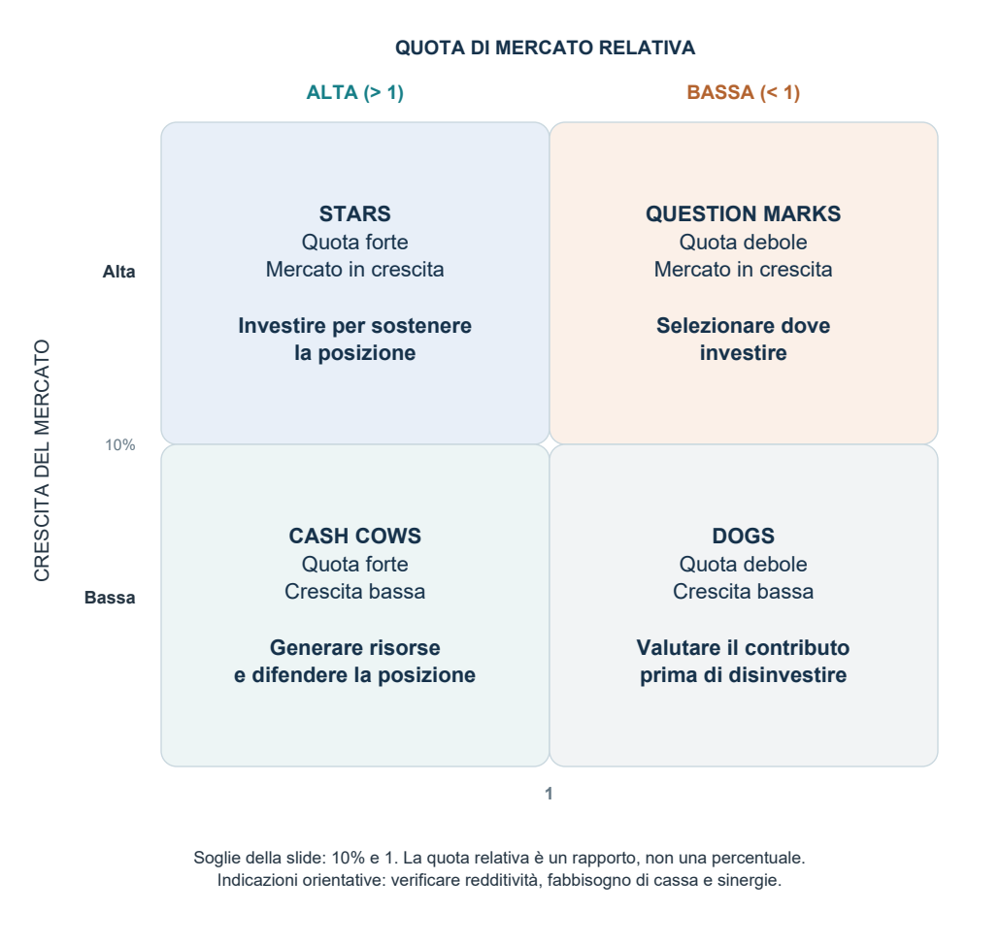
Possibili flussi finanziari nel portafoglio
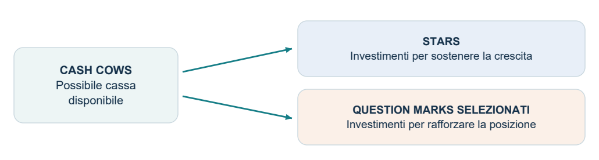
Le frecce indicano una possibile allocazione della cassa, non un passaggio automatico da un quadrante all’altro.
IMPRESA E DECISIONI STRATEGICHE / SEZIONE 14
Risorse, competenze e vantaggio durevole
Fonte: slide 68-73
L’approccio tradizionale è operativo, ma tende a leggere l’impresa come un insieme di business in una situazione relativamente stabile. L’approccio risorse-competenze guarda invece a come le imprese accumulano e usano capacità diverse, spiegando la persistenza dei differenziali di prestazione.
Quando una risorsa sostiene il vantaggio?
| Caratteristica | Significato per la strategia |
|---|---|
| Difficile imitabilità | I concorrenti non riescono a riprodurla facilmente o economicamente. |
| Durata | Mantiene utilità e valore nel tempo. |
| Appropriabilità | L’impresa riesce a trattenere i benefici economici che genera. |
| Difficile sostituibilità | Altre risorse non consentono facilmente di ottenere gli stessi risultati. |
| Superiorità competitiva | Offre un contributo migliore rispetto alle alternative dei concorrenti. |
L’imitazione è ostacolata da unicità fisica o condizioni esclusive, path dependency (storia non rapidamente replicabile di conoscenze e reputazione), ambiguità causale (difficoltà nel capire le cause del successo) e deterrenti economici, come una reazione attesa che renda sconveniente imitare.
L’albero di Prahalad e Hamel
Radici = core competence; tronco e rami = componenti chiave; foglie e frutti = prodotti commerciali. I prodotti visibili cambiano, mentre competenze profonde possono alimentare più business. Le slide citano Canon, 3M, Black&Decker e Honda come esempi, senza sviluppare qui casi dettagliati.
Le competenze sono sia input da utilizzare, che condizionano fattibilità e costo delle scelte, sia output da sviluppare, che ne determinano la rilevanza futura. Si identificano competenze distintive, stato attuale, competenze obiettivo e piani di sviluppo, allineando controllo e gestione del personale.
Pregi, limiti e radici teoriche
Questa prospettiva aiuta a interpretare crescita, diversificazione, internazionalizzazione, alleanze, outsourcing e OEM, ossia produzione di componenti o prodotti destinati all’offerta di altre imprese. Il limite è la difficoltà di trasformarla in strumenti operativi: riconoscere e misurare una competenza è meno immediato che osservare una quota di mercato.
Le radici richiamate nelle slide sono Ricardo (1817: rendite da fattori produttivi superiori), Penrose (1959: risorse in eccesso come motore di crescita), Richardson (1964: competenze e accordi), Williamson (1979: costi transazionali), Nelson e Winter (1982: teoria evoluzionista) e Teece (1987: asset complementari).
IMPRESA E DECISIONI STRATEGICHE / APPROFONDIMENTO 14
Capire le competenze distintive
Slide 68-73 | Spiegazione dei meccanismi e dei limiti
Risorsa e competenza: possesso e capacità di impiego
Come distinzione didattica, una risorsa è qualcosa di cui l’impresa dispone: impianti, conoscenze, marca o relazioni. Una competenza è la capacità di coordinare e usare risorse per svolgere un’attività. Acquistare macchinari simili a quelli del leader non significa saper ottenere automaticamente la stessa qualità o velocità.
Una core competence è una capacità profonda che sostiene prodotti e business: nell’albero delle slide costituisce la radice. Una competenza è distintiva quando differenzia favorevolmente l’impresa rispetto alle alternative competitive. Non ogni risorsa necessaria al funzionamento è una fonte di vantaggio: alcune sono disponibili a tutti.
Perché imitare può essere difficile
La path dependency significa che conta il percorso: reputazione, relazioni e conoscenza si accumulano attraverso esperienze che non si comprano tutte insieme. L’ambiguità causale significa che non è chiaro quale combinazione di organizzazione, persone e procedure produca il risultato. Una risorsa può inoltre essere esclusiva o troppo costosa da replicare rispetto al beneficio atteso.
Durata, sostituzione e appropriazione
Una capacità difficile da copiare può diventare inutile se cambia il bisogno: la durata riguarda la persistenza della sua utilità. Un concorrente può anche evitare di imitarla, usando una tecnologia alternativa: è il problema della sostituibilità. Infine, il valore creato deve restare almeno in parte all’impresa: se una controparte essenziale lo assorbe attraverso le condizioni economiche, l’appropriabilità è limitata.
Dalla diagnosi al piano di sviluppo
Identifica la capacità rilevante, descrivi come si manifesta nelle attività e confrontala con i concorrenti. Definisci poi la capacità futura desiderata e il divario da colmare. Formazione, apprendimento sul campo, investimenti e alleanze possono contribuire, ma richiedono risorse attuali sufficienti: la competenza è contemporaneamente input della scelta e risultato da sviluppare.
Il limite operativo resta misurare e distinguere la competenza dalle sue conseguenze: “abbiamo successo perché siamo bravi” non spiega il meccanismo che produce il vantaggio.
IMPRESA E DECISIONI STRATEGICHE / TAVOLA H
L’albero delle competenze
Rielaborazione grafica delle slide 71-72
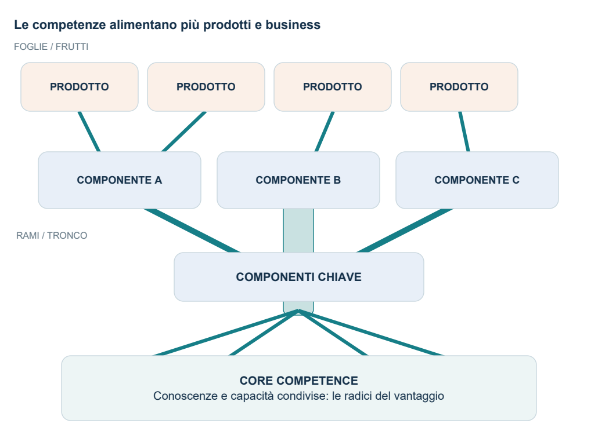
La metafora: i prodotti visibili sono sostenuti da componenti chiave e competenze condivise. Una competenza distintiva può alimentare più business e nuove direzioni di crescita.
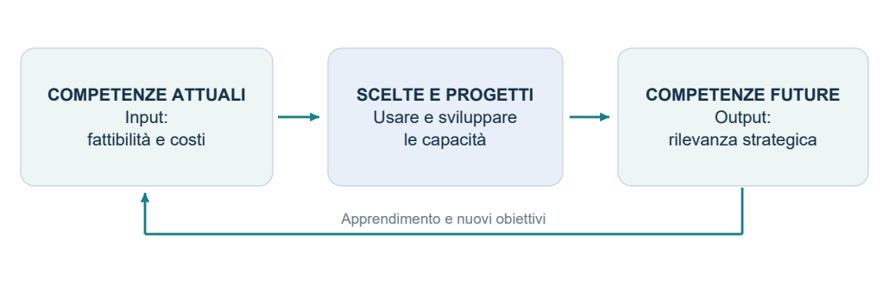
IMPRESA E DECISIONI STRATEGICHE / SEZIONE 15
Caso svolto: collegare i modelli
Esempio interamente didattico, non presente nelle slide
Situazione: “TermoBox” produce contenitori riutilizzabili per pasti. Serve soprattutto lavoratori che portano il pranzo fuori casa. Possiede buone competenze sui materiali e sull’isolamento, ma dipende da un fornitore per un componente e ha una distribuzione limitata. Si ipotizza una crescita dell’interesse per soluzioni riutilizzabili.
1. Definire il business con Abell
Clienti: lavoratori che consumano pasti fuori casa. Funzioni: trasportare e conservare il pasto alla temperatura desiderata. Tecnologie: materiali e sistemi isolanti. Questa definizione permette di distinguere concorrenti con offerte comparabili e soluzioni alternative allo stesso bisogno.
2. Analizzare il settore con le cinque forze
Rivalità: aumenta se molti prodotti sono percepiti come equivalenti. Entranti: la minaccia dipende da capitale, competenze, accesso alla distribuzione e marca necessari. Sostituti: altre soluzioni per conservare e consumare il pasto possono limitare la disponibilità a pagare. Fornitori: il componente esclusivo crea dipendenza e costi di cambiamento. Clienti: grandi distributori con alternative possono richiedere prezzi più bassi.
3. Scegliere la strategia e localizzare il vantaggio
Una possibile scelta è la focalizzazione sulla differenziazione: prestazioni e facilità d’uso adatte a quel segmento. Nella catena del valore il vantaggio nasce da sviluppo tecnologico, controllo degli input e progettazione; marketing e distribuzione devono far percepire e rendere accessibile il beneficio. Il costo della differenziazione deve essere coperto dal valore riconosciuto dai clienti.
4. Usare la SWOT per generare decisioni
Forza: competenze nei materiali. Debolezze: dipendenza dal fornitore e distribuzione limitata. Opportunità: interesse per il riuso, nell’ipotesi del caso. Minaccia: ingresso di offerte equivalenti a basso prezzo. Possibili azioni: valorizzare le prestazioni distintive, cercare alternative tecniche al componente e costruire partnership distributive.
5. Passare al corporate e alle competenze
Se l’impresa avesse più SBU, la BCG richiederebbe dati di crescita e quota relativa per ciascuna: il solo racconto del caso non permette di assegnare un quadrante. La prospettiva delle competenze chiede invece se il sapere sull’isolamento possa alimentare nuovi prodotti o business correlati.
IMPRESA E DECISIONI STRATEGICHE / APPROFONDIMENTO 15
TermoBox: scegliere fra alternative
Estensione didattica del caso | Ipotesi e valori inventati
Nuove ipotesi per rendere la scelta confrontabile
Aggiungiamo al caso precedente dati inventati riferiti a 10.000 pezzi all’anno. Le quantità restano uguali nelle alternative per isolare l’effetto di prezzo e costo. Il costo variabile comprende produzione e servizio variabile; i costi fissi aggiuntivi del progetto sono indicati separatamente. I costi fissi comuni restano invariati.
| Alternativa | Prezzo | Costo variabile | Margine contribuzione | Fissi annui aggiuntivi |
|---|---|---|---|---|
| Base attuale | 40 € | 25 € | 15 €/pezzo | 0 € |
| Ribasso di prezzo | 36 € | 25 € | 11 €/pezzo | 0 € |
| Prodotto più distintivo | 48 € | 29 € | 19 €/pezzo | 25.000 € |
Risultato incrementale rispetto alla base
Il ribasso riduce il contributo annuale di (11 - 15) × 10.000 = -40.000 euro. A costo variabile invariato, servirebbero almeno 150.000 / 11 = 13.637 pezzi circa per recuperare il contributo iniziale; vanno verificate capacità disponibile e domanda, senza assumerle.
L’offerta distintiva aggiunge (19 - 15) × 10.000 - 25.000 = 15.000 euro al risultato annuale, prima di altre differenze non considerate. Il beneficio unitario incrementale è 4 euro: il progetto copre i suoi costi fissi aggiuntivi da 25.000 / 4 = 6.250 pezzi, nel confronto a pari volume con la base.
Che cosa manca prima di scegliere?
Verificare che il cliente riconosca il beneficio e accetti 48 euro; che materiali, qualità e tempi sostengano l’offerta; che la distribuzione raggiunga il segmento. Se il volume varia, il confronto va ricalcolato. Gli eventuali investimenti iniziali e il capitale circolante devono essere valutati separatamente: il semplice risultato annuale non completa l’analisi.
Dalla conclusione al piano
Una prova con clienti del segmento verifica il valore percepito; la qualificazione tecnica di un secondo fornitore riduce la dipendenza; un accordo distributivo mirato verifica copertura e margini. Indicatori utili sono prezzo effettivamente ottenuto, margine per pezzo, difetti, puntualità e costo del canale. Le soglie vanno fissate prima della prova.
IMPRESA E DECISIONI STRATEGICHE / SEZIONE 16
Domande da esame e ripasso finale
Tracce di risposta per verificare comprensione e collegamenti
1. Perché le imperfezioni del mercato rendono rilevante la strategia?
Creano differenze fra imprese e possibilità di extraprofitti. La strategia ricerca scelte durevoli per ottenerli e difenderli.
2. Qual è la differenza fra corporate, business e funzione?
Corporate: dove operare e allocare risorse. Business: come competere. Funzione: come realizzare la strategia e sviluppare capacità specifiche.
3. Perché Abell precede le cinque forze?
Clienti, funzioni e tecnologie delimitano il business. Senza confini coerenti è ambiguo distinguere rivali, entranti e sostituti.
4. Un settore attrattivo garantisce successo all’impresa?
No. La redditività dipende anche dalla posizione competitiva, cioè dal differenziale rispetto ai concorrenti.
5. Perché gli entranti contano prima del loro ingresso?
Una minaccia credibile disciplina i prezzi e può imporre spese difensive. Dipende da barriere e reazione attesa.
6. Come distingui scala, apprendimento e scopo?
Scala: dimensione produttiva. Apprendimento: produzione cumulata ed esperienza. Scopo: vantaggi dalla condivisione di risorse tra attività o offerte diverse.
7. Costo basso e prezzo basso sono la stessa cosa?
No. Il costo basso è una condizione produttiva; il prezzo è una scelta commerciale. Il vantaggio può diventare margine oppure capacità di competere sui prezzi.
8. Che cosa aggiunge la catena del valore?
Individua le fonti del vantaggio nelle singole attività, nei loro legami e nel perimetro dell’impresa.
9. Perché la SWOT non è solo un elenco?
Deve collegare trend esterni e fattori interni per far emergere questioni strategiche e decisioni.
10. Qual è il limite principale della BCG?
Crescita e quota sono indicatori semplificati; non garantiscono attrattività e vantaggio. Il modello trascura le sinergie tra business.
11. Che cosa rende difficile imitare una competenza?
Unicità, storia di accumulazione, ambiguità delle cause del successo e deterrenti economici. Contano anche durata, appropriabilità e sostituibilità.
IMPRESA E DECISIONI STRATEGICHE / PREPARAZIONE ALL’ORALE
Quattro risposte da sviluppare
Esempi di argomentazione basati sui modelli delle slide
1. Come colleghi analisi esterna e interna?
“L’analisi esterna spiega le opportunità e le minacce del contesto, in particolare le pressioni che determinano l’attrattività del settore. Quella interna identifica i punti di forza e debolezza rispetto ai concorrenti e le fonti di vantaggio nelle attività. La SWOT incrocia i risultati per formulare questioni strategiche. Una domanda in crescita non basta: occorrono capacità per servirla in modo redditizio. Viceversa, possedere una capacità non basta se il cliente non ne riconosce il valore.”
2. Come riconosci un vantaggio competitivo sostenibile?
“Prima individuo la prestazione relativa: costi inferiori o unicità apprezzata in un dato ambito. Poi risalgo alle attività, ai collegamenti e alle risorse che la generano. Infine valuto imitabilità, durata, sostituibilità e possibilità di appropriarsi dei benefici. Un risultato favorevole in un solo periodo non dimostra da solo un vantaggio durevole: può dipendere da condizioni temporanee. La sostenibilità richiede meccanismi che rallentino l’erosione e capacità di rinnovamento.”
3. Perché un business classificato dog può essere mantenuto?
“La BCG usa crescita e quota relativa come indicatori semplificati. Un dog può occupare una nicchia redditizia oppure contribuire ad altri business attraverso tecnologia, distribuzione o clienti condivisi. Prima di disinvestire devo valutare cassa, redditività, capitale e sinergie. Questo non significa mantenerlo sempre: significa motivare la scelta sul contributo complessivo, senza trattare il quadrante come una regola automatica.”
4. Integrare un fornitore è sempre conveniente?
“Può ridurre dipendenza e costi di coordinamento e migliorare controllo su qualità e tempi. Tuttavia può richiedere capitale, ridurre flessibilità e portare a svolgere un’attività meno efficientemente di uno specialista. Occorre confrontare i costi totali delle alternative e l’effetto sulle competenze. Se la fornitura è critica ma il fornitore è molto efficiente, una partnership può essere un’alternativa da valutare.”
IMPRESA E DECISIONI STRATEGICHE / GLOSSARIO E DISTINZIONI
Le distinzioni che fanno chiarezza
Scheda di ripasso da usare dopo lo studio dei capitoli
| Termini | Differenza da ricordare |
|---|---|
| Strategia / obiettivo | L’obiettivo indica il risultato cercato; la strategia comprende scelte e risorse per perseguirlo. |
| Business / SBU | Il business è il campo competitivo; la SBU è il soggetto organizzativo o di pianificazione che lo gestisce. |
| Attrattività / posizione | La prima riguarda il settore; la seconda la capacità dell’impresa rispetto ai concorrenti. |
| Entrata / uscita | Le barriere all’entrata ostacolano nuovi concorrenti; quelle all’uscita trattengono gli operatori esistenti. |
| Rivale / sostituto | Il rivale opera nel perimetro definito; il sostituto soddisfa lo stesso bisogno da un altro settore o tecnologia. |
| Scala / capacità / esperienza | Scala: dimensione e assetto produttivo. Utilizzo: sfruttamento dell’impianto esistente. Esperienza: produzione cumulata e apprendimento. |
| Costo / prezzo / margine | Il costo riguarda le risorse impiegate; il prezzo ciò che paga il cliente; il margine richiede di precisare quali costi vengono sottratti. |
| Differenziazione / diversificazione | Differenziare rende distinta l’offerta; diversificare amplia il portafoglio di business. |
| Integrazione verticale / sinergia orizzontale | La prima riguarda le fasi della filiera; la seconda le interdipendenze fra business. |
| Quota assoluta / relativa | Assoluta: vendite sul totale del mercato. Relativa: quota propria divisa per quella del concorrente di riferimento. |
| Risorsa / competenza | La risorsa è disponibile all’impresa; la competenza consiste nel saper coordinare e impiegare risorse. |
| Profitto / cassa | Il risultato economico e i movimenti finanziari differiscono: investimenti, scorte e crediti possono assorbire liquidità. |